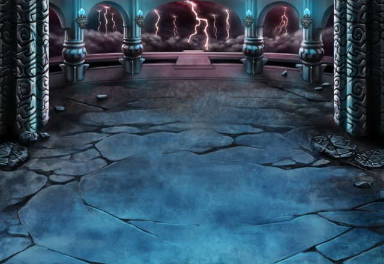

カル
ああ、これで俺たちは ルシアス様に会うことができるのかな？
アーク
その力はかつての英雄たちにも 引けをとらないだろう。
アーク
お前たちは自分たちが使っている力の 正体も知らないのだな。
アーク
グランガイアに来たことで お前たちが使えるようになった召喚術。
セリア
バカなこと言わないでよ！ そんな訳ないじゃない！
アーク
かつてルシアス様とカルナ・マスタ様は 対立した。
アーク
そして、カルナ・マスタ様は ルシアス様により封じられてしまう。
ティリス
ルシアス様は、カルナ・マスタ様と 話してるって……。
アーク
ルシアス様は自身が封じた カルナ・マスタ様と
アーク
ルシアス様に封じられたカルナ・マスタ様は その間際に世界に呪いをかけた。
アーク
この地の人間が、神をも越える力を 手に入れる呪いをな。
アーク
その後、ルシアス様は人に その力が伝わるのを恐れ
アーク
自身の強大な力で 呪いが広がるのを止めていたが
アーク
かつての大戦で傷ついたことで力を失い 呪いはこの地すべてに広がることになった。
セリア
だったら、どうして扉を開いて 私たちをこの地に導いたのよ！
ルジーナ
人間以上に四堕神の脅威の方が 大きかったからだろ。
ルジーナ
エルガイアの人間全員が こっちに来られない理由も
ルジーナ
召喚術を使える人間が増え過ぎると 自分も危なくなるからってとこか。
ルジーナ
結局のところ、ルシアスは 俺たち人間をどうしてーんだ？
ルジーナ
アークさんとやら、 アンタは俺たちに何をやらせたいんだ？
アーク
この地はかつて、 人と神々を結ぶ聖域のひとつだった。
アーク
ラ・ヴェーダの聖域は 大神皇カルナ・マスタ様と、
アーク
護神十二聖が守る聖域は 十神の他の神々をそれぞれ結び、
アーク
そして、この神託の塔は 封神ルシアス様と結ばれていた。
アーク
俺はこの地を巫女とともに守る 神託の騎士と呼ばれていた。
アーク
バリウラという地は神々への畏敬が少なく この塔も当時から寂れていたがな。
アーク
力がありながらも カルナ・マスタ様の副神として
アーク
つまり、俺は遥か昔から ルシアス様に仕える騎士。
アーク
元より人間でありながら 人間に与しない存在だ。
ルジーナ
ケッ、つまりは俺たちの実力を 認めてねーってことだな。
ルジーナ
いいぜ、これからお前をぶっ倒して 本心を吐き出させてやろうか？
ティリス
あなたがその仮面の下で 何か悲しそうにしてたのを。
ティリス
だから、その悲しさを少しでも 私たちに話して。
ティリス
あなたの数百年の悲しさを きっと和らげてくれるよ。
アーク
覚悟があるならば“帝都バリウラ”まで 来るがいい。
アーク
少ない時間とはいえ、 しっかりと考えるのだな。
アーク
人間の未来はお前たちの 選択にかかっていると思え……。
セリア
どっちにしろゲートを閉じるつもりなら 戦うつもりだったしね。
パリス
でも、ルシアス様に会って 話は聞いてみたい。
パリス
エリオール様のことをどう思い 力を貸していたのか。
ルジーナ
要は俺たちが使う召喚術ってのは 神様を倒すためのモンなんだろ？
ルジーナ
だったら、試してみるのも いいんじゃねーか？
ルジーナ
カルナ・マスタ“様”の願いは 聞いてやらねーとな。
ティリス
でも、ルシアス様が何か悪いことを 考えてるならそれは止めたい……。
ティリス
そのためには、戦うのも 仕方が無いと思ってる！
セリア
当たり前じゃない。 こいつがティリスを困らせると思う？
ティリス
Shou-chan～！ ありがと～～～！！
ティリス
でも、私がルシアス様と 戦わなくてすむようにがんばるから
ティリス
Shou-chanもみんなも 無茶だけはしないでね！
カル
よっし、それじゃあアークに会いに “帝都バリウラ”に向かうとするか！
カル
現在に生きる人間の覚悟を 神託の騎士さんとやらに伝えてやろうぜ！